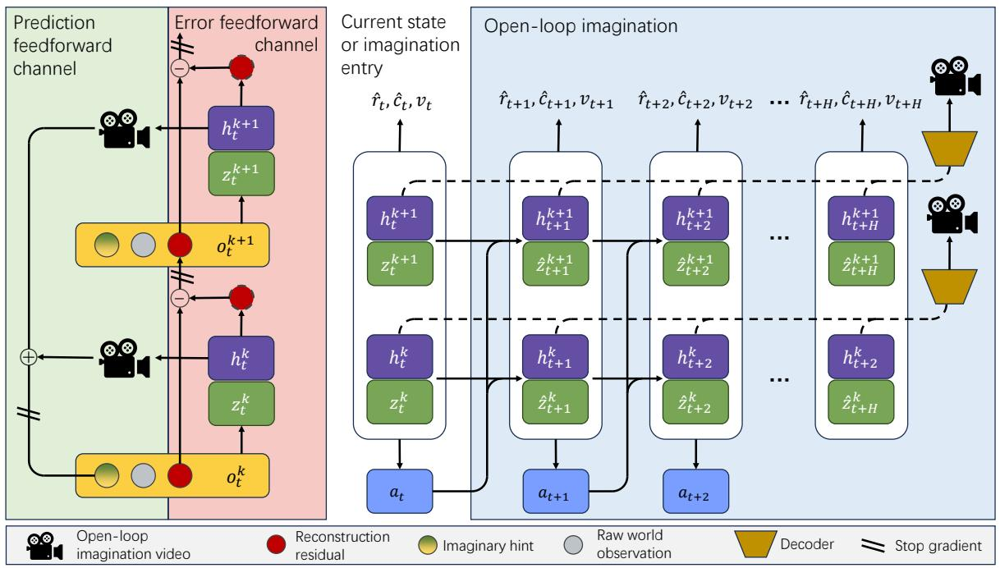

Self-supervised Hierarchical Visual Reasoning with World Model ICML 2026 · CCF A 原文链接
编号2605.17537优先级P1类别World model / video SSL会议ICML 2026 · CCF A方法hierarchical residual world model for self-supervised visual foresight来源arXiv / OpenReview
Figure 1Figure 1. Overview of ResDreamer a model base RL algorithm based on hierarchical world model. The left side shows the structure of enhanced visual observations. Adjacent world model layers communicate by residual and predictive signal within the enhanced observation. The right side shows the modules and training process of the k-th layer world model. The Encoder reads enhanced visual observations and gives the posterior $z _ { t . } ^ { k } .$ The dynamic predictor learns to estimate $z _ { t } ^ { k }$ with $\hat { z } _ { t } ^ { k }$ without accessing the observation. The sequence model updates internal state $h _ { t } ^ { k }$ by $z _ { t } ^ { k }$ . The Decoder reconstructs the observation signal which generates reconstruction loss and residual visual signal for upper layer.

Figure 2Figure 2. The information channel between world model layers is bidirectional. Only reconstruction error and modulated foresight images are transmitted between layers, with no gradients being passed. On one hand, each layer of the PPB generates predictions about the external world and transmits visual planning representations to lower layers. On the other hand, the PPB treats low-level residuals as self-supervised learning signals to obtain a more complete inner representation.
它真正改变的是训练信号，而不是榜单数字
hierarchical residual world model for self-supervised visual foresight。这类工作值得被放在通用视觉自监督日报里，不是因为它一定立刻刷新所有 benchmark，而是因为它改变了模型“从哪里拿监督”的方式。
MinerU full.md is now part of the source bundle for this page; the next pass will use it for paper-native English quotes and tighter argument writing.